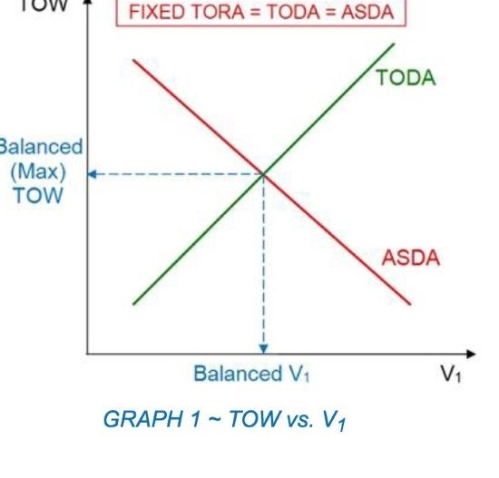
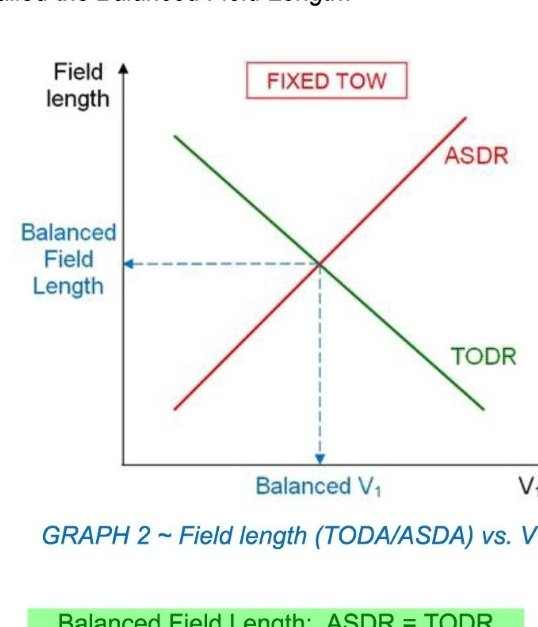
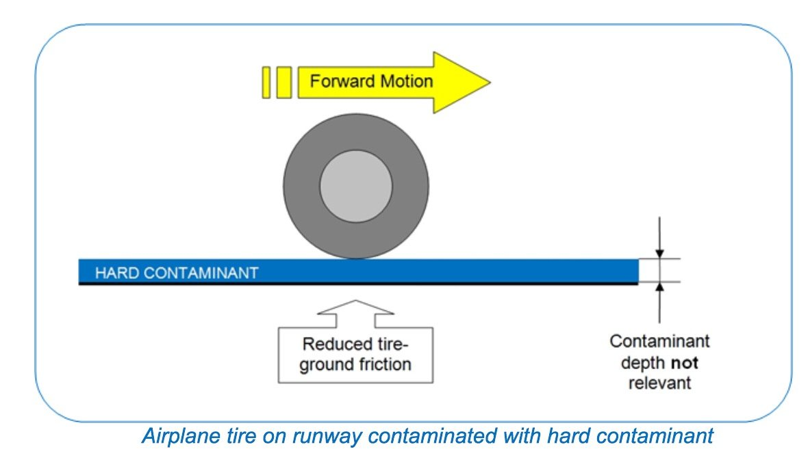
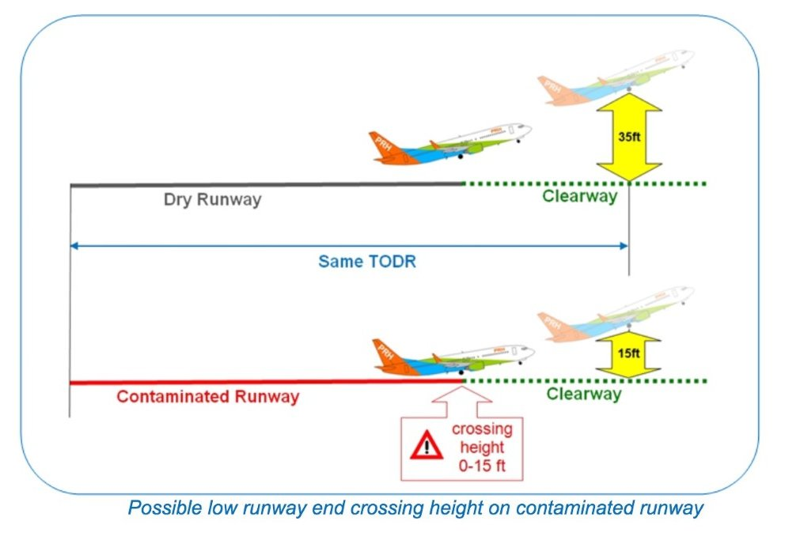
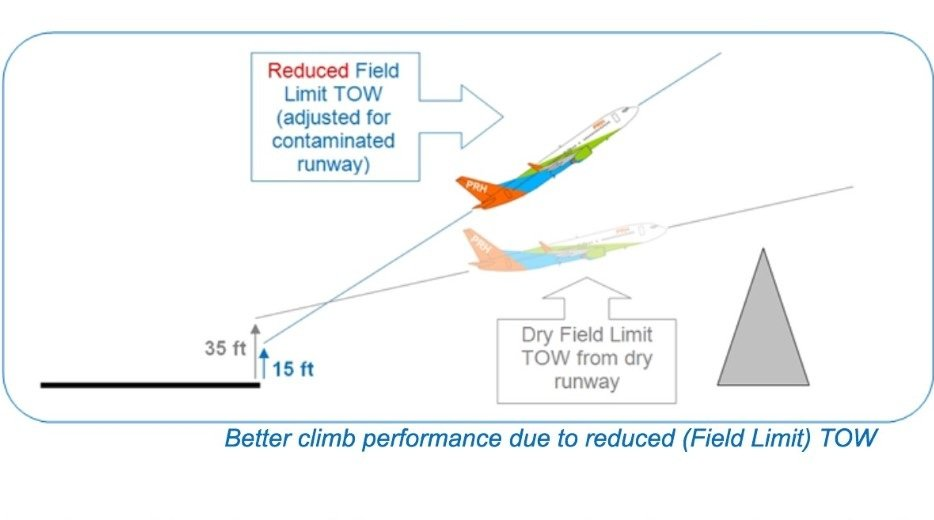

Lesson 03: Balanced Take-off and Runway Surface Condition
Learning objectives
- Explain the balanced V1 and the balanced field length.
- Compare dry, wet and contaminated runway take-off rules.
- Explain the V1(MCG) limit weight and why clearway is restricted on wet and contaminated runways.
Balanced V1
For a fixed runway, a heavy take-off needs a low V1 to be able to stop within the ASDA, but a high V1 to reach V2 at 35 ft within the TODA after an engine failure. The highest weight is obtained where the two requirements meet: the balanced V1 and the balanced take-off weight.

Balanced field length
For a fixed weight, a low V1 shortens the accelerate-stop distance but lengthens the take-off distance, and the reverse for a high V1. The shortest required runway is where ASDR equals TODR: the balanced field length. With a stopway or clearway the optimum V1 moves and the take-off is "unbalanced".

Dry and wet runways
A damp runway (not shiny) may be treated as dry, except grass (CAT.POL.A.105); industry (TALPA) and ICAO guidance recommend treating it as wet. A wet runway has a reflective surface without significant standing water. Acceleration is unchanged but stopping is worse, so:
- V1 is re-balanced to a lower value and the field length limit weight decreases;
- one reverser may be credited in the accelerate-stop distance;
- the screen height is reduced from 35 ft to 15 ft, therefore clearway cannot be used;
- the weight may never exceed the dry-runway weight in the same conditions (CAT.POL.A.205(b)(5)) — the "dry check".

Contaminated runways
A runway is contaminated when more than 25 % of the surface in use is covered by standing water or slush deeper than 3 mm, loose snow (ICAO: deeper than 20 mm), compacted snow or ice. Fluid contaminants add displacement and spray drag and can cause aquaplaning; hard contaminants reduce friction without adding drag.


The rules credit reverse thrust and a 15 ft screen height, but assumed-temperature reduced thrust is not allowed. GM1 CAT.POL.A.400: such operations should be rare — the first option is to wait for the runway to be cleared.
V1(MCG) limit weight
On a slippery runway V1 may need to be reduced so much that it falls below VMCG. V1 is then set equal to VMCG, which needs more stopping distance; the weight for which the aeroplane can accelerate to VMCG and just stop within the ASDA is the V1(MCG) limit weight. A derate (not an assumed temperature) lowers VMCG and can raise this limit.
Clearway on contaminated runways
The contaminated-runway adjustments give the same distance to 15 ft as the dry weight needs to 35 ft. If the dry weight already used clearway, the height at the runway end after an engine failure could be close to zero.


Key takeaways
- Balanced V1: ASD-limited and TOD-limited weights equal — the maximum field-limited weight.
- Wet: lower V1, one reverser credit, 15 ft screen height, no clearway, never heavier than dry.
- Contaminated: no assumed-temperature reduced thrust; check the V1(MCG) limit weight.
- Waiting for the runway to be cleared is always the first option.
Knowledge check
What screen height is used at the end of the take-off distance on a wet runway?
- 50 ft
- 35 ft
- 15 ft
- 0 ft
Answer: C. The wet-runway rules reduce the screen height to 15 ft — and so clearway cannot be used.